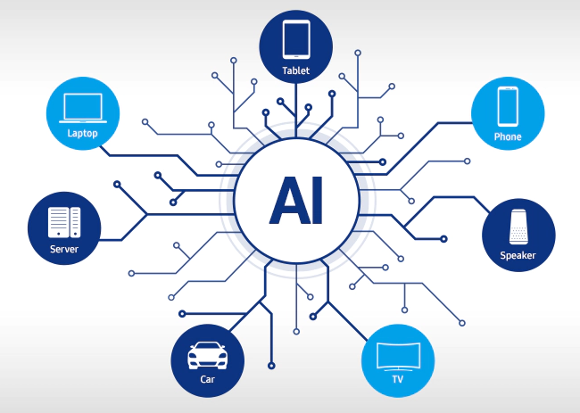

Artificial intelligence (AI)
Artificial intelligence (AI) has become one of the most transformative and disruptive technologies of our time. From self-driving cars and personalized recommendations on social media platforms to voice assistants and medical diagnoses, AI is changing the way we live, work, and interact with the world around us. In this blog, we'll explore what AI is, how it works, and some of its current and potential applications.
What is AI?
AI refers to the ability of machines to perform tasks that typically require human intelligence, such as learning, reasoning, and problem-solving. It involves developing algorithms that can process and analyze large amounts of data, recognize patterns and relationships, and make predictions or decisions based on that data. AI can be divided into two categories: narrow or weak AI, which is designed to perform specific tasks, and general or strong AI, which is capable of performing any intellectual task that a human can.

How does AI work?
AI systems typically rely on machine learning, which is a subset of AI that involves training algorithms on large datasets to recognize patterns and make predictions. There are several types of machine learning, including supervised learning, unsupervised learning, and reinforcement learning. In supervised learning, the algorithm is trained on labeled data, meaning that the correct output is provided for each input. In unsupervised learning, the algorithm is trained on unlabeled data, meaning that it must identify patterns and relationships on its own. In reinforcement learning, the algorithm learns by receiving feedback in the form of rewards or penalties based on its actions.
What are some current and potential applications of AI?
AI has already been used to develop a wide range of applications across many industries. In healthcare, AI is being used to analyze medical images, diagnose diseases, and develop personalized treatment plans. In finance, AI is being used for fraud detection, credit scoring, and algorithmic trading. In transportation, AI is being used for self-driving cars, traffic management, and predictive maintenance. In retail, AI is being used for personalized recommendations, inventory management, and customer service.

In addition to these current applications, there are many potential applications of AI that are still being developed. For example, AI could be used to develop more accurate climate models, improve natural language processing, and enhance cybersecurity. AI could also be used to develop more advanced robotics and autonomous systems, which could revolutionize manufacturing, agriculture, and other industries.
Conclusion
AI is a rapidly evolving technology that has the potential to transform many aspects of our lives. While there are concerns about the impact of AI on jobs and society, it's clear that AI has many potential benefits, from improving healthcare outcomes to reducing traffic accidents. As AI continues to develop, it will be important to consider the ethical, social, and economic implications of this powerful technology.